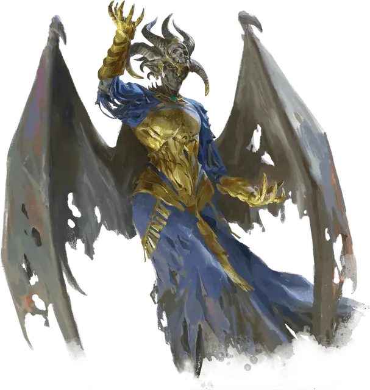

Леди Илмерроу
Lady Illmarrow
Средняя Нежить, нейтрально-злая, именной НИП

Класс Доспеха 19 (природный доспех)
Хиты 199 (21к8 + 105)
Скорость 30 футов, летая 40 футов
| мод | спас | ||
|---|---|---|---|
| СИЛ | 16 | +3 | +3 |
| ЛОВ | 16 | +3 | +3 |
| ТЕЛ | 20 | +5 | +12 |
| мод | спас | ||
|---|---|---|---|
| ИНТ | 27 | +8 | +15 |
| МДР | 21 | +5 | +12 |
| ХАР | 24 | +7 | +7 |
Навыки Восприятие +12, История +15, Магия +15, Проницательность +12
Сопротивление урону холод, электричество
Иммунитет к урону некротическая энергия, яд; дробящий, колющий, рубящий от немагических атак
Иммунитет к состояниям окаменение, ослепление, отравление, паралич, очарование, глухота, испуг, ошеломление, истощение
Чувства истинное зрение 120 футов, пассивное Восприятие 22
Языки Общий, Драконий, Эльфийский
Опасность 22 (41000 опыта)
Бонус мастерства +7
Особенности
Легендарное сопротивление (3/день). Если Иллмерроу проваливает спасбросок, она может вместо этого сделать спасбросок успешным.
Сопротивление магии. Иллмероу совершает с преимуществом спасброски от заклинаний и прочих магических эффектов.
Восстановление. Тело Иллмерроу превращается в пыль, когда её здоровье падает до 0 хитов, а ее снаряжение падает. Она получает новое тело после 1к10 дней, восстанавливая все свои хиты и снова активизируется. Новое тело появляется в двухстах милях от места, где она была уничтожена.
Использование заклинаний. Иллмерроу является заклинателем 20-го уровня. Её базовой характеристикой является Интеллект (Сл спасброска от заклинания 23, +15 к попаданию атаками заклинаниями). У неё подготовлены следующие заклинания волшебника:
• Заговоры (неограниченно): леденящее прикосновение [chill touch] (см. «Действие» ниже), огненный снаряд [fire bolt], волшебная рука [mage hand], луч холода [ray of frost], фокусы [prestidigitation]
• 1 уровень (4 ячейки): волшебная стрела [magic missile], щит [shield], усыпление [sleep]
• 2 уровень (3 ячейки): размытый образ [blur], обнаружение мыслей [detect thoughts], отражения [mirror image]
• 3 уровень (3 ячейки): восставший труп [animate dead], контрзаклинание [counterspell], огненный шар [fireball], полёт [fly], молния [lightning bolt]
• 4 уровень (3 ячейки): усыхание [blight], смятение [confusion], превращение [polymorph]
• 5 уровень (3 ячейки): облако смерти [cloudkill], конус холода [cone of cold], удержание чудовища [hold monster], наблюдение [scrying]
• 6 уровень (2 ячейки): пляшущая молния [chain lightning], круг смерти [circle of death], сотворение нежити [create undead]
• 7 уровень (2 ячейки): перст смерти [finger of death], узилище [forcecage], радужные брызги [prismatic spray]
• 8 уровень (1 ячейка): воспламеняющаяся туча [incendiary cloud], лабиринт [maze]
• 9 уровень (1 ячейка): слово силы: смерть [power word kill], остановка времени [time stop]
Действия
Леденящее прикосновение (заговор). Дальнобойная атака заклинанием:+ 15 к попаданию, дистанция 120 футов, одно существо. Попадание: 18 (4к8) некротического урона, и цель не может восстанавливать хиты до начала следующего хода Иллмерроу. Если цель-нежить, она также получает помеху на броски атаки против Иллмерроу до конца её следующего хода.
Парализующий коготь. Рукопашная атака оружием: +10 к попаданию, досягаемость 5 футов., одно существо. Попадание: 13 (3к6 + 3) рубящий урон плюс 10 (3к6) урона холодом. Цель должна преуспеть в спасброске Телосложения Сл 20, иначе цель будет парализована на 1 минуту. Цель может повторять спасбросок в конце каждого своего хода.
Ядовитое дыхание (перезарядка 5-6). Илмерроу выдыхает ядовитый газ в 30-футовом конусе. Каждое существо в этой области должно совершить спасбросок Телосложения Сл 20. При провале существо получает 35 (10к6) урона ядом и становится отравленным на 1 минуту. Будучи отравленным таким образом, существо не может восстанавливать хиты. В случае успеха существо получает лишь половину урона и не становится отравленным. Существо, чьи хиты были опущены до 0 этим действием умирает, а в следующем ходу восстает как зомби Иллмерроу. В порядке инициативы зомби ходит сразу после Иллмерроу. Зомби находится постоянно под её командованием и выполняет все её приказы.
Легендарные действия
Леди Иллмерроу может совершить 3 легендарных действия, выбирая из представленных ниже вариантов. За один раз можно использовать только одно легендарное действие, и только в конце хода другого существа. Иллмерроу восстанавливает использованные легендарные действия в начале своего хода.
Заговор. Иллмерроу может наложить заговор.
Парализующий коготь. Иллмерроу использует свой Парализующий коготь.
Пугающее присутствие (стоит 2 действия). Илмерроу нацеливается на трех существ, которых она видит в радиусе 30 футов от себя. Каждая цель должна преуспеть в спасброске Мудрости Сл 20, иначе существо становится испуганным в течение одной минуты. Испуганная цель может повторять спасбросок в конце каждого своего хода, оканчивая эффект на себе в случае успеха. Если цель преуспевает в спасброске, то получает иммунитет к Пугающему присутствию Иллмерроу на 24 часа.
Ядовитое дыхание (стоит 3 действия). Иллмерроу восстанавливает свое ядовитое дыхание и использует его.
Описание
Леди Иллмерроу - легенда, древний лич, который по рассказам, обитает в замке из костей и льда в самых холодных районах Лхазаарских Княжеств. В некоторых историях говорится, что ей служит легион нежити и что она содержит двор вампиров и призраков в своем ледяном дворце. Другие легенды утверждают, что когда кто-то умирает в Лхазааре, Иллмерроу забирает его душу, прежде чем она перейдет к Хранителю и Долурру.
Но Леди Илмерроу - не народная сказка. Она - величайший некромант в Эберроне, и после столетий молчания она наконец приводит в действие древние заговоры. Она - сила, стоящая за Орденом Изумрудного Когтя, но ее мотивы основания ордена похоронены в ее прошлом. Леди Иллмерроу не заинтересована в том, чтобы править живыми. Скорее, она стремится стать королевой мертвых.
Метка смерти. Иллмерроу - это княжество на острове Харлинген - родина эльфов, изгнанных из Аэренала, которые веками практиковали некромантию. Но корни Леди Иллмерроу простираются далеко за пределы ее владений на острове. Давным-давно было обнаружено, что эльфийская линия Вол- это дом, который практиковал искусство некромантии и носил драконью метку Смерти, был вовлечен в тайные ритуалы крови с кланом драконов. Открытие этого договора вызвало беспрецедентный союз между королями побратимами Аэренала и драконами Аргоннесена. Короли побратимы поклялись, что дом Вол будет уничтожен, а метка Смерти будет стерта с лица земли. Род Вол издавна соперничал с Бессмертным двором, и даже сегодня многие шепчутся, что нападение на дом Вол было не более чем предлогом для устранения политического соперника.
Но другие верят, что Бессмертный двор на самом деле боялся пути, указанного в Драконьем пророчестве - что ребенок, рожденный от дракона и эльфа, может стать богоподобным аватаром Смерти.
Возвышение Иллмерроу. Даже когда драконы и эльфы сражались, чтобы пресечь линию Вол, в Доме родился ребенок: Эрандис. Отпрыск эльфов и драконов, Эрандис несла на себе печать Смерти, не похожую ни на одну другую. Со временем эта печать могла бы стать ее вратами к бессмертию и непревзойденной силе, но девушку выследили и убили задолго до того, как она смогла овладеть магией знака. Ее мать, Минара Вол, сбежала с телом дочери в ледяные пределы Фарлнена, подальше от конфликта. Там Минара высвободила всю свою некротическую силу, чтобы поднять Эрандис как лича.
Будучи нежитью, Эрандис потеряла способность пользоваться своей драконьей меткой. Таким образом, когда прорицатели Аэренала спросили, была ли уничтожена линия Вол и уничтожена метка Смерти, то они получили видение, подтверждающее, что родословной Вол больше не существует. Для всего мира последняя оставшаяся в живых представительница этого рода известна как Леди Иллмерроу. Но на самом деле она - Эрандис Вол, наследница метки Смерти.
Загнана в ловушку бессмертия. Когда Минара возродила Эрандис в качестве лича, она спрятала талисман своей дочери, вплетя в него чары, которые заставляют Эрандис возрождаться в случайном безопасном убежище после того, как она будет убита. И даже сама Эрандис не знает место, где спрятан ее талисман и его форму.
Восстановление метки. Хотя ей доставляет огромное удовольствие сражаться с драконами и эльфами, которые уничтожили ее предков, у Леди Иллмерроу есть более важная цель: восстановить свою драконью метку и раскрыть божественные силы. Агенты Изумрудного Когтя, которые служат ей, сражаются либо на благо Каррната, либо ради личной выгоды, но Илмерроу не заботится ни о чем, кроме увеличения своих некротических знаний и поиска способа восстановить утраченную метку.
Леди Иллмерроу и кровь Вол
Кровь Вол и Леди Илмерроу - это наследие рода Вол, но они не одно и то же. Насколько всем известно, линия Вол была уничтожена. Последователи культа Крови Вол, которые слышали о Леди Иллмерроу, верят, что она защитница их веры, но они не поклоняются ей и не служат ей. Силы жрецов Крови Вол исходят не от Леди Иллмерроу.